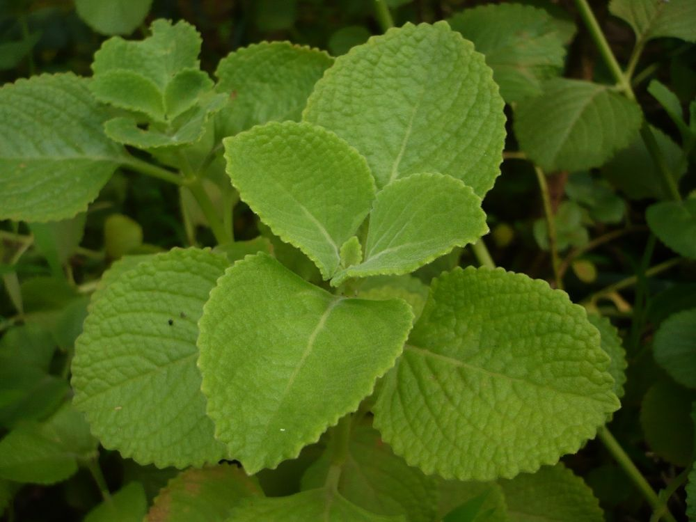

🌿 சித்த மருத்துவக் குறிப்பு:
கற்பூரவள்ளி இலைச் சாற்றைச் சிறிது தேனுடன் கலந்து கொடுத்தால் குழந்தைகளின் சளி, இருமல் குறையும் என்பது பாட்டி வைத்தியம். (குழந்தைகளுக்கு மிகச் சிறிய அளவே போதும்.)
உங்களுக்குத் தெரியுமா?
1கற்பூர மணம் வீசும் இலை
இலையைத் தொட்டாலே கற்பூரம் போன்ற மணம் வீசுவதால் "கற்பூரவள்ளி" என்று பெயர். ஓமம் போன்ற மணமும் இருப்பதால் "ஓமவள்ளி" என்றும் அழைப்பர்.
2மென்மையான வெல்வெட் இலைகள்
தடித்த, சாறு நிறைந்த இலைகள் வெல்வெட் துணி போல மென்மையாக இருக்கும். இதன் இலையில் செய்யும் பஜ்ஜி மிகவும் சுவையானது!
3தொட்டியில் வளர்க்க ஏற்ற மூலிகை
ஒரு சிறு தண்டை நட்டாலே எளிதாக வளரும். ஒவ்வொரு வீட்டின் சன்னலோரத்திலும் இருக்க வேண்டிய மூலிகை இது.
இந்தத் தகவல் பயனுள்ளதாக இருந்ததா?